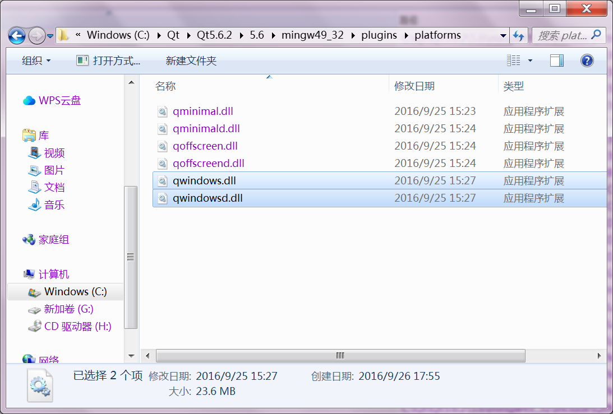

可爱界面，放缩自如
和各种因缩放导致的显示问题说再见，让 Qt 默认支持小数缩放倍数。
 下载
下载
系统要求： Windows 7+/Vista/XP(SP1+) Wine 1.0+ ReactOS 0.4.13+
截图

介绍
这是一个让 Qt 默认支持小数缩放倍数的小工具。使用它后，您应使用 Fusion 风格，不应使用 QGraphicsEffect，否则会出现错误。目前，此工具支持 Qt 5.6（MinGW 版本）。
使用方法：打开 C:\Qt\Qt(版本)(版本)\mingw(版本)\plugins\platforms，替换 qwindows.dll 和 qwindowsd.dll。